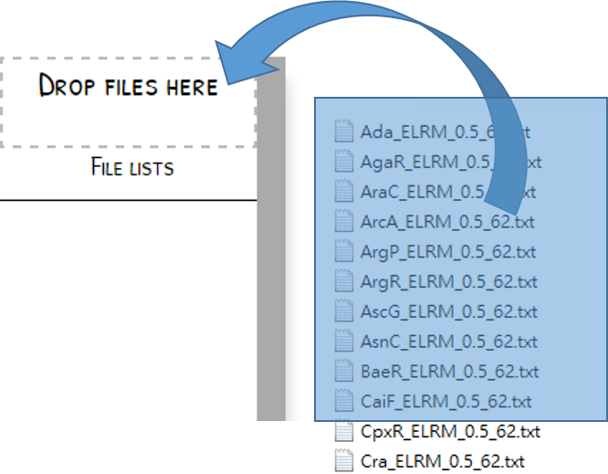
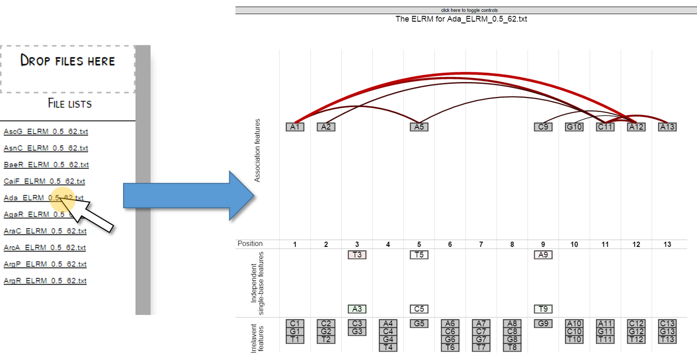
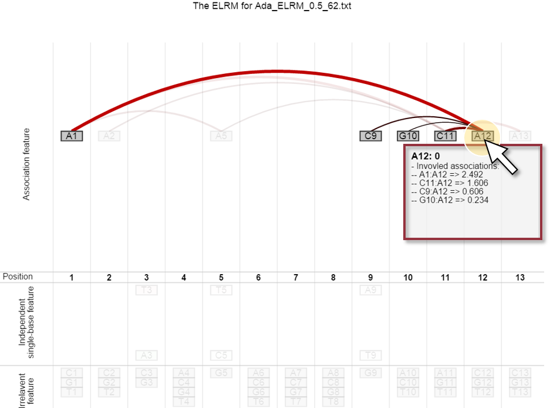

Please drag the ELRM output files onto the top-left box with dashed border. You can drag and drop your files at any time. File names will be appended in the list below the drop zone. Multiple files are allowed.

Click one of the files and the graphical representation will be shown in the web page. If you want to change another model, click the left gray bar to toggle the file list.

In the graphical representation of ELRM, each box represents a single-base features and the links between boxes are association features. You may see the regressed coefficients by clicking the box. A tooltip will show the coefficients of the corresponding single-base feature and the involved associations. You may close the tooltip by clicking it.
